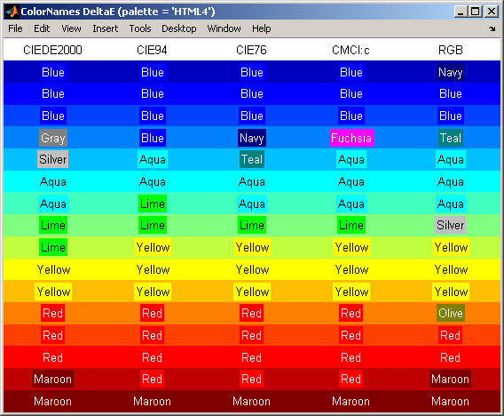
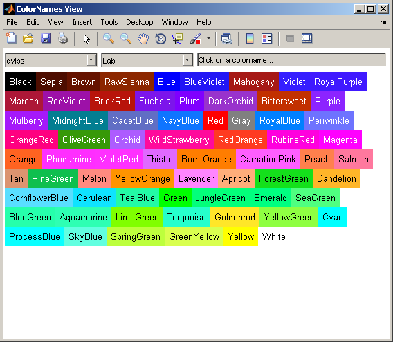
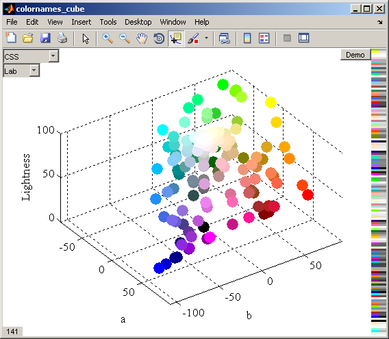

COLORNAMES Examples
The function COLORNAMES matches the input RGB values or color names to the closest colors from the selected palette. COLORNAMES returns the same outputs whether matching names or RGB:
[names,RGB] = colornames(palette,RGB) [names,RGB] = colornames(palette,names)
This document shows some examples of using COLORNAMES to match RGB values or color names. The bonus functions are also explained in this document, together with examples.
Contents
- List of Palettes
- Return the Color Names and RGB Values for One Palette
- Match Color Names
- Match Index Number
- Match Initial Letter
- Match RGB
- Match RGB, Selecting the Color Difference Metric
- View the Color Difference Metrics in a Figure
- View the Palette Colors in 2D
- View the Palette Colors in 3D
- Unmatched Color Name Suggestions
List of Palettes
Palettes of named colors have been defined by various different groups, often intended for very different purposes. COLORNAMES includes a wide selection of common color palettes. A list of the supported palettes is returned by calling COLORNAMES with no input arguments:
palettes = colornames()
palettes =
'Alphabet'
'AmstradCPC'
'AppleII'
'Bang'
'BSC381'
'CGA'
'Crayola'
'CSS'
'dvips'
'Foster'
'HTML4'
'ISCC'
'Kelly'
'MacBeth'
'MATLAB'
'Natural'
'R'
'RAL'
'Resene'
'Resistor'
'SVG'
'Wikipedia'
'Wolfram'
'X11'
'xcolor'
'xkcd'
Return the Color Names and RGB Values for One Palette
Simply call COLORNAMES with the name of the required palette:
[clr,rgb] = colornames('MATLAB')
clr =
'Black'
'Blue'
'Cyan'
'Green'
'Magenta'
'Red'
'White'
'Yellow'
rgb =
0 0 0
0 0 1
0 1 1
0 1 0
1 0 1
1 0 0
1 1 1
1 1 0
Match Color Names
Each input name is matched to a color name from the requested palette: an input name that does not match any of the color names will throw an error. The matching is very flexible though, as COLORNAMES usually makes a match regardless of spaces between words and character case, although for some palettes space characters may be significant. Note that CamelCase always signifies separate words (words all in one case are considered one word).
The color names are input as char row vectors, and may supplied either within one cell array, or as separate input arguments:
[clr,rgb] = colornames('xkcd',{'red','green','blue'}) [clr,rgb] = colornames('xkcd','eggshell','eggShell')
clr =
'Red'
'Green'
'Blue'
rgb =
0.89804 0 0
0.082353 0.6902 0.10196
0.011765 0.26275 0.87451
clr =
'Eggshell'
'Egg Shell'
rgb =
1 1 0.83137
1 0.98824 0.76863
Match Index Number
Palettes with a leading index number may be matched by just the number, or just the name, or both together:
colornames('CGA','9','LightBlue','9LightBlue')
ans =
'9 Light Blue'
'9 Light Blue'
'9 Light Blue'
Match Initial Letter
Palettes Alphabet, MATLAB, and Natural also match the initial letter to the color name (except for 'Black' which is matched by 'k'):
colornames('MATLAB','c','m','y','k')
ans =
'Cyan'
'Magenta'
'Yellow'
'Black'
Match RGB
Each input RGB triple is matched to the closest RGB triple from the requested palette:
[clr,rgb] = colornames('HTML4', [0,0.5,1;1,0.5,0])
clr =
'Blue'
'Red'
rgb =
0 0 1
1 0 0
Match RGB, Selecting the Color Difference Metric
Input RGB values are matched using one of several standard, well defined color difference metrics known as  or deltaE. The default color difference is "CIE94", which provides good matching for most palettes and colors. Other deltaE calculations can be selected by using the third input argument:
or deltaE. The default color difference is "CIE94", which provides good matching for most palettes and colors. Other deltaE calculations can be selected by using the third input argument:
rgb = [0,0.5,1]; colornames('HTML4',rgb,'CIEDE2000') colornames('HTML4',rgb,'CIE94') % default colornames('HTML4',rgb,'CIE76') % aka "Lab" colornames('HTML4',rgb,'CMCl:c') colornames('HTML4',rgb,'RGB')
ans =
'Gray'
ans =
'Blue'
ans =
'Navy'
ans =
'Fuchsia'
ans =
'Teal'
View the Color Difference Metrics in a Figure
The helper function COLORNAMES_DELTAE demonstrates how the different deltaE metrics match the input RGB to the palette colors. Simply select the palette, provide an Nx3 colormap and all deltaE metrics are listed, with the matched colors displayed in the columns below:
colornames_deltaE('HTML4',jet(16))
 View the Palette Colors in 2D
The helper function COLORNAMES_VIEW plots the palettes in a figure. Drop-down menus select the palette, and also how the colors are sorted. Click on any color to view its hex RGB value (may be approximate).
colornames_view('dvips','Lab')
View the Palette Colors in 3D
The helper function COLORNAMES_CUBE plots the palettes in a figure. The data cursor can be used to view the color names, by clicking on the nodes. Drop-down menus select the palette, and the color space of the colorcube:
colornames_cube('CSS','Lab')
Unmatched Color Name Suggestions
If the input color name cannot be matched then COLORNAMES will throw an error, and displays color names that are similar to the input string/s:
colornames('CSS', 'bleu', 'blanc', 'rouge')
Error using ==> colornames>cnNoMatch at 293
The palette 'CSS' does not support these colors: 'bleu', 'blanc', 'rouge'.
Palette color names that are similar to the input names:
bleu -> 'Blue', 'Black', 'Peru', 'Plum', 'Red', 'Aqua', 'Beige', 'Bisque'.
blanc -> 'Black', 'Blue', 'Cyan', 'Tan', 'Beige', 'Brown', 'Gray', 'Khaki'.
rouge -> 'Azure', 'Beige', 'Blue', 'Orange', 'Aqua', 'Brown', 'Coral', 'Gold'.
Call COLORNAMES('CSS') to list all color names for that palette,
or COLORNAMES_VIEW('CSS') to view the palette in a 2D list,
or COLORNAMES_CUBE('CSS') to view the palette in a 3D cube.
Error in ==> colornames at 240
cnNoMatch(pal,clr,arg(idn==0))
Error in ==> colornames_doc at 78
colornames('CSS', 'bleu', 'blanc', 'rouge')